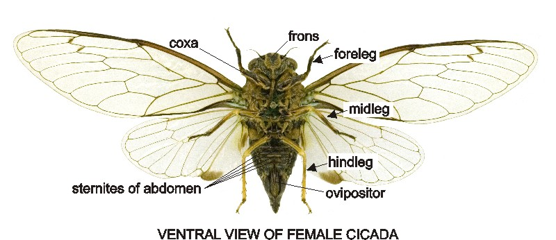
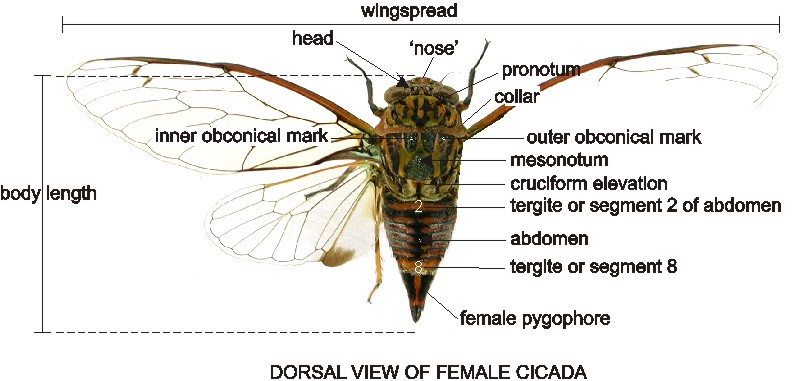

Dino's New Zealand Cicada Guide
Te Aratohu a Dino mō ngā Tātarakihi o Aotearoa

Why?
Recently, I've had a hyperfixation[1]
on the cicadas belonging to my home country, but every site reccomended to learn how to identify
each species has been unarchived or shut down.
Out of pure spite, I decided to create my own guide. I don't want the knowledge of these creatures
to be forever lost to time.
Photos on this site are either taken from iNaturalist
[2] , (which you can click
on in order to view the original observation) or are taken by me, my mum, or my friends.
Each link will provide information on the species belonging to the genus.
Important Notes
I'm currently considering spreading out each species to have its own, individual page, alongside having a general hub for my cicada fixations, not just those in NZ.
The Maoricicada page is not made. I had to stop for a long break after Kikihia to prevent myself from burnout.
Genera Overview
New Zealand has five cicada genera:
Below are some small pointers at figuring out which genus a cicada may belong to, so you know which page to visit:Amphipsalta - Clapping Cicadas
There are three currently recognised Amphipsalta species.
These cicadas are the most common, and largest seen in NZ. They get their common name, "Clapping Cicadas" due to how they clap their wings as part of how they attract females, characterised by a loud "pop".They prefer to sing high up, primarily on trees, and come out each summer. Amphipsalta is unique in that their songs are easily heard, whereas other genera are more difficult.
Closer Look
Amphipsalta generally have a body length longer than 19mm. There is a small bend in the costa [3] of their forewings [4] , with their R crossveins [5] coloured in. All three species have black patterning, and a vertical, usually yellow line on their pronotum [6] , surrounded by aformentioned black patterning. The collar of this genera's pronotum is extended outward laterally.Kikihia - Kikihi Cicadas
Kikihia is a genus of 16 species, including subspecies. They are generally smaller, and harder to hear.
They are the second most common cicada to encounter in New Zealand, and sometimes the hardest to identify. Kikihia is believed to be the most diverse genera of cicadas in New Zealand, with an estimated total of over 28 species, most undescribed. [7]
Closer Look
This genus has no bends in its forewing costa, and their body is usually less than 19mm. The pterostigma [8] is not transparent, the collar of this genera's pronotum is extended outward laterally. Females of this genus are mostly green in colour, (though this shouldn't solely be used as a means of gender identification).
Maoricicada - Black Cicadas
Maoricicada is a genus of 19 cicada species, including subspecies.
This genus has the most amount of described cicadas in New Zealand. Maoricicada are also known as "Mountain Black Cicadas", due to their habitat preferences.Closer Look
This genus has no bends in its forewing costa, and their body is usually less than 19mm. The pterostigma of the forewing is transparent in this genus. The colour of this genus is usually primarily black.Notopsalta - Clay Bank Cicada
Notopsalta contains one species: Notopsalta sericea.
They occur in the North Island.Closer Look
This genus has no bends in its forewing costa, and their body is usually less than 19mm. The pterostigma is not transparent, the collar of this genera's pronotum is extended outward laterally. The colour of this genus is usually primarily black, in both females and males. The underside of the abdominal segments have a vertical line of darker colouration along the midline.Rhodopsalta - Redtail Cicadas
Rhodopsalta contains three species.
These cicadas prefer a life around water, usually around the coast.Closer Look
This genus has no bends in its forewing costa, and their body is usually less than 19mm. The pterostigma is not transparent in this genus, and the membrane/s connecting the forewings to the body are usually red or orange. The segments of this genera's abdomen have a black and red-orange dorsal pattern. The collar of this genera's pronotum does not laterally extend outward. This genus also sometimes has the vertical yellow line on their pronotum like Amphipsalta.Credits
This page wouldn't be possible without the knowledge of others, and the folk over on iNaturalist who
taught me so much about identification without even realising it. I also extend credit, of course, to
those whose pictures I have used on this site. I don't get any money from this, it's simply an
educational resource I've put together in my own time.
I also want to extend support to my friends and family for indulging my odd interests and
hyperfixations over the years. Not just in my current obsession over cicadas, but in general. Especially
those who take extra time out of their lives to send me a picture of an insect, knowing how much I love
to learn about them, so I can learn more and share my knowledge.
My support is also given to those who know me through my videos on bugs, or know of my ramblings from
social media. People tell me that I singlehandedly helped them with their irrational fears of insects,
that my content has made people more aware of the entomological world, and I can only thank you all for
giving me the chance to share it with you in the first place.
Some Cicada Terminology
Most of the time, when a word is used for the first time on a page, I add a footnote for a definiton of the term for better understanding. But here's a collection of some of the terms you'll see used;


From the archived Landcare Research page on cicadas. [13]
New Zealand Cicada Calendar [11] [12] [2]
Guide:| Active | Awake | Tired | Exhausted | Asleep |
| This month is favoured by the species, with the most sightings. | This is the standard emergence and active time of this species. | This species is dying out, less are appearing. The emerging individuals are likely stragglers or early. | The last few are dying off, or the first few are extremely early. sightings are rare. | Either have just died out, or not yet emerged. No sightings. |
Quick Call Ref [12] [2] [14]
on-the-go audio files for identifying cicadas by call. Subspecies are added if their calls are distinctly different and are available.
| Amphipsalta cingulata (Clapping Cicada) | Amphipsalta strepitans (Chirping Cicada) | Amphipsalta zelandica (Chorus Cicada) | Kikihia angusta (Tussock Cicada) | Kikihia cauta (Greater Bronze Cicada) | Kikihia convicta (Norfolk Island Cicada) |
| Kikihia cutora (Snoring Cicada) | Kikihia dugdalei (Dugdale's Cicada) | Kikihia horologium (Clock Cicada) | Kikihia laneorum (Lane's Cicada) | Kikihia longula (Chatham Island Cicada) | Kikihia muta (Variable Cicada) |
| Kikihia ochrina (April Green Cicada) | Kikihia paxillulae (Peg's Cicada) | Kikihia rosea (Pink Cicada) | Kikihia scutellaris (Lesser Bronze Cicada) | Kikihia subalpina (Subalpine Green Cicada) | Maoricicada alticola (High Alpine Cicada) |
| Maoricicada campbelli (Campbell's Cicada) | Maoricicada cassiope (Screaming Cicada) | Maoricicada clamitans (Yodelling Cicada) | Maoricicada hamiltoni (Hamilton's Cicada) | Maoricicada iolanthe (Iolanthe Cicada) | Maoricicada lindsayi (Lindsay's Cicada) |
| Maoricicada mangu celer (Braying Cicada) | Maoricicada mangu mangu (Canterbury Scree Cicada) | Maoricicada myersi (Myer's Cicada) | Maoricicada nigra frigida (Eastern Subnival Cicada) | Maoricicada nigra nigra (Western Subnival Cicada) | Maoricicada oromelaena (Greater Alpine Black Cicada) |
| Maoricicada otagoensis (Speargrass Cicada) | Maoricicada phaeoptera (Southern Dusky Cicada) | Maoricicada tenuis (Northern Dusky Cicada) | Notopsalta sericea (Clay Bank Cicada) | Rhodopsalta cruentata (Blood Redtail Cicada) | Rhodopsalta leptomera (Sand Dune Redtail Cicada) |
| Rhodopsalta microdora (Little Redtail Cicada) | |||||
Undescribed
| Kikihia 'astragali' (undescribed species) | Kikihia 'balena' (undescribed species) | Kikihia 'southwestlandica' (undescribed species) | Kikihia 'northwestlandica' (undescribed species, likely extinct) | Kikihia 'murihikua' (undescribed species) |
| No Audio Available | No Audio Available | No Audio Available | ||
| Kikihia 'nelsonensis'/'hudsoni' (undescribed species) | Kikihia 'peninsularis' (undescribed species) | Kikihia 'tasmani' (undescribed species) | Kikihia 'tuta' (undescribed species) | |
| No Audio Available |
-
I must stress that I am by no means an expert in entomology, nor hold any degrees, and instead an autistic individual who fell down a hole into a new hyperfixation.
back
-
back
-
The costa is the thick leading edge of an insect's wings.
back
-
The first wing, also referred to as the anterior wing.
back
-
Using the Comstock-Needham system used for naming insect wing veins, R represents "Radius", and in cicadas, represents the crossveins (circled in red) for the sections labelled R4 and R23 here:
back

-
The pronotum is the first segment of an insect's body after the head.
back
-
Arensburger, P., Simon, C., & Holsinger, K. (2004). Evolution and phylogeny of the New Zealand cicada genus Kikihia Dugdale (Homoptera : Auchenorrhyncha : Cicadidae) with special reference to the origin of the Kermadec and Norfolk Islands' species. BLACKWELL PUBLISHING LTD. Journal of Biogeography, 31(11), 1769-1783. Retrieved from https://escholarship.org/uc/item/6ph1m2xx
back
-
The pterostigma is a specialised area in some insect species, including cicadas. It is attached to the costa near the tip of the wing. It helps in gliding, being heavier than the rest of the wing.
back

-
This website is incredibly useful, however, requires a Java Applet emulator/viewer in order to use. To access it, I just used the CheerpJ chrome extension, which was the first result on google.
back
-
For some reason this website constantly reloads itself, so it's a bit annoying to use.
back
-
Auchenorrhyncha (Insecta: Hemiptera): catalogue. Fauna of New Zealand 63, Lariviere, M.-C.; Fletcher, M.J.; Larochelle, A. 2010.
back
-
Te Papa Museum - Kihikihi Cicadas and Their Sounds
back
-
Larivière, M.-C.; Rhode, B.E.; Larochelle, A. 2006 (and updates): New Zealand Cicadas (Hemiptera: Cicadidae): A virtual identification guide. The New Zealand Hemiptera Website, NZHW 05. Archived.
back
-
Archived Hydrodictyon NZ Cicada Species Page
back